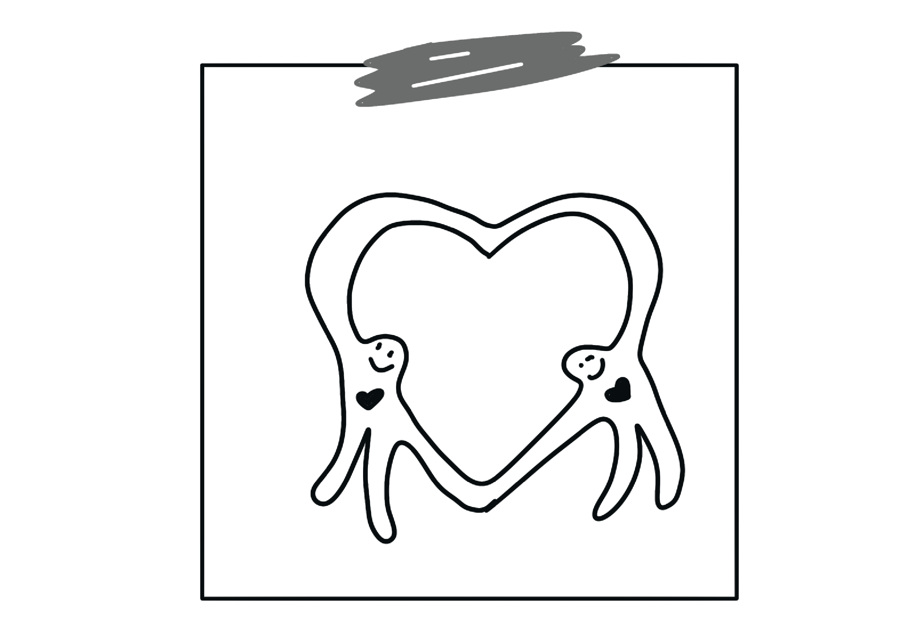
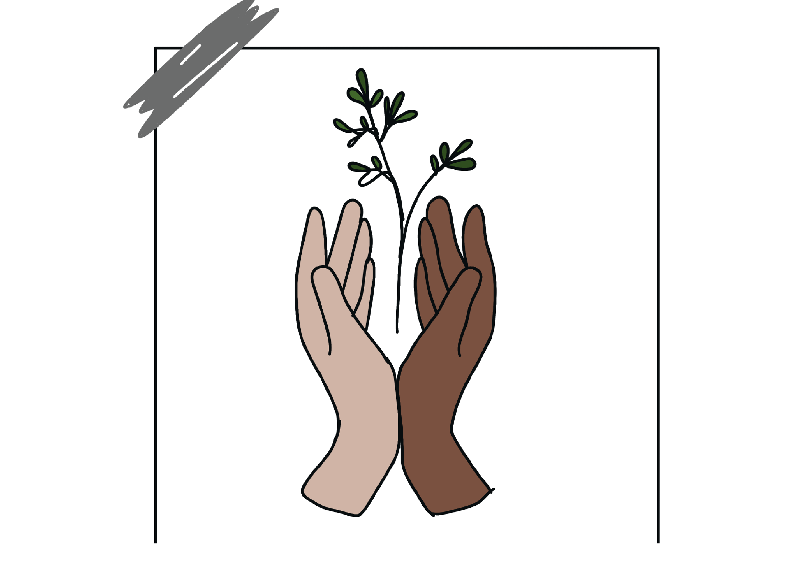
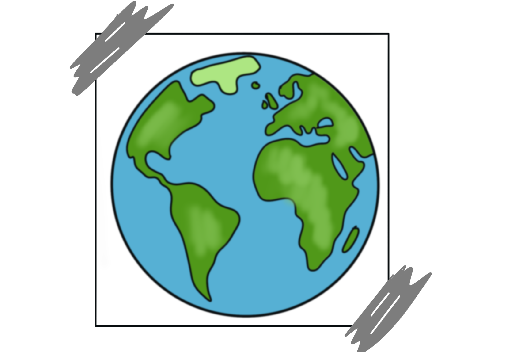

Help ons mee

Bij Tony’s Chocolonely draait alles om het creëren van een slaafvrije chocolade-industrie. Maar we kunnen het niet alleen doen – we hebben jouw hulp nodig! Door samen te werken kunnen we de cacaoketen eerlijker maken en een wereld zonder uitbuiting bouwen.
Er zijn verschillende manieren waarop jij kunt bijdragen aan onze missie:
- Deel je liefde voor Tony’s: Vertel je vrienden en familie over onze missie en waarom eerlijke chocolade belangrijk is.
- Steun lokale initiatieven: Doe mee aan evenementen en projecten in Amsterdam om Tony’s boodschap verder te verspreiden.
- Kies bewust: Kies voor producten die transparantie en eerlijke handel bevorderen, en steun bedrijven die zich inzetten voor een slaafvrije wereld.
- Doneer of werk mee: Help ons met het vergroten van onze impact door je tijd of middelen te doneren aan gerelateerde goede doelen.


Goede doelen
-
Fairtrade Nederland
Zet zich in voor eerlijke handel en betere leefomstandigheden voor boeren en arbeiders wereldwijd. Ze werken ook aan duurzaamheid in de cacaoketen. Website -
Rainforest Alliance
Richt zich op duurzame landbouw en bosbehoud, wat essentieel is voor het beschermen van cacao-ecosystemen. Website -
Slave Free Chocolate
Een internationale organisatie die bewustzijn creëert over slavernij in de chocolade-industrie en pleit voor ethisch geproduceerde cacao. Website